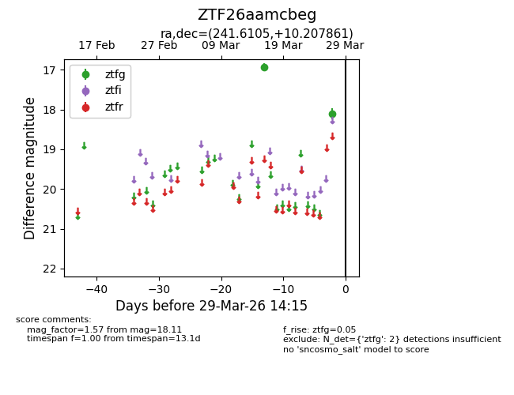
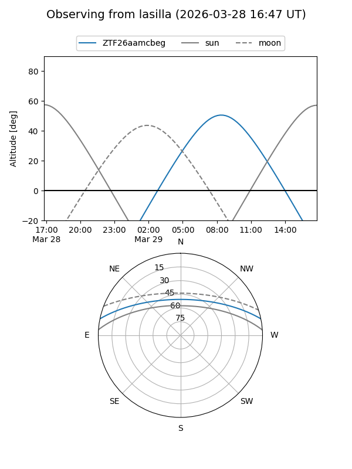
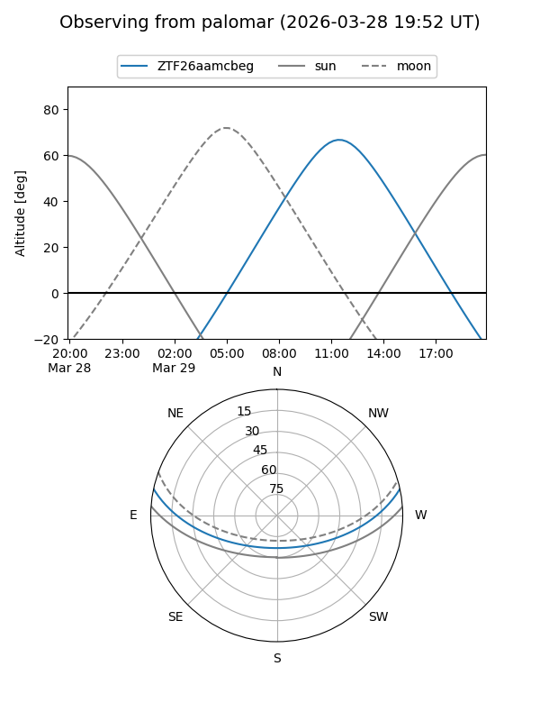

ZTF26aamcbeg
Target ZTF26aamcbeg at 2026-03-29 14:18
Aliases and brokers:
FINK: link
Lasair: link
ALeRCE: link
alt names
ZTF26aamcbeg (ztf,fink_ztf)
Coordinates:
equatorial (ra, dec) = 241.6105,+10.20786
equatorial (HMS+DMS) = 16:06:26.53,+10:12:28.30
galactic (l, b) = (22.3555,+41.17178)
Flags:
Photometry:
last ztfg=18.11
2 ztfg detections
Lightcurve

Visibility


Additional plots